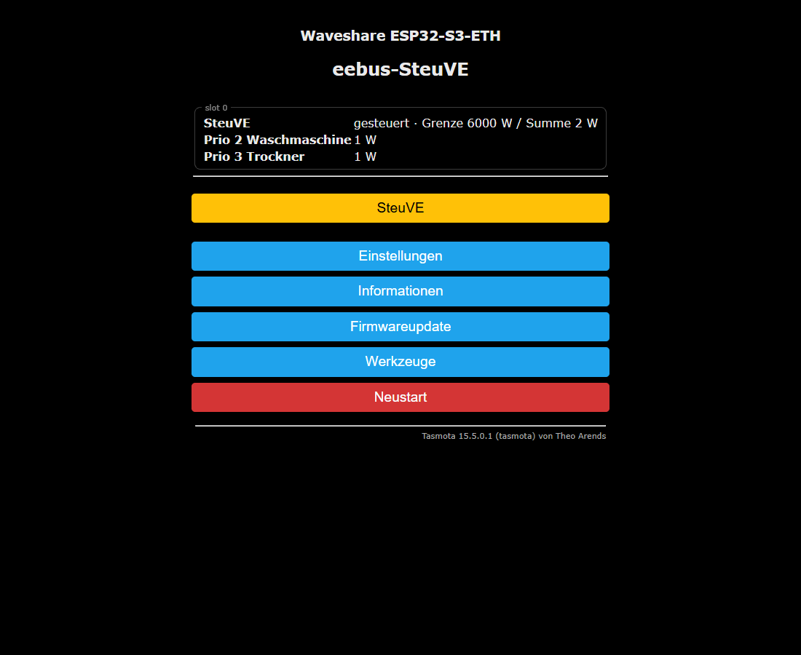
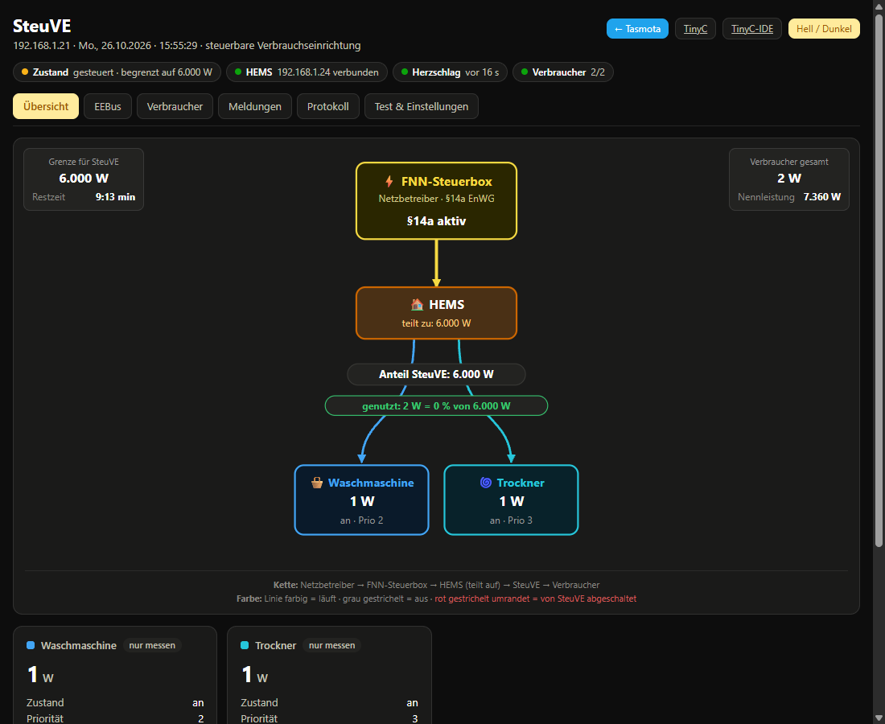
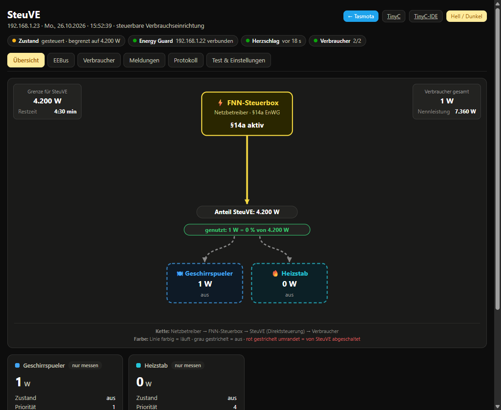
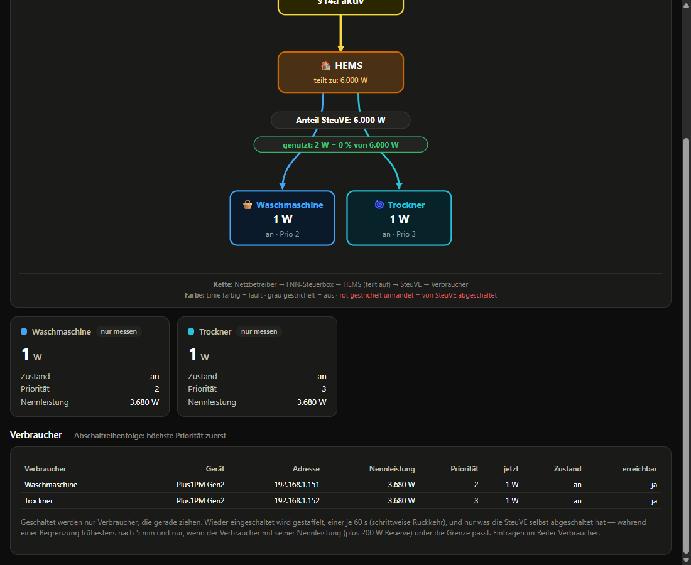
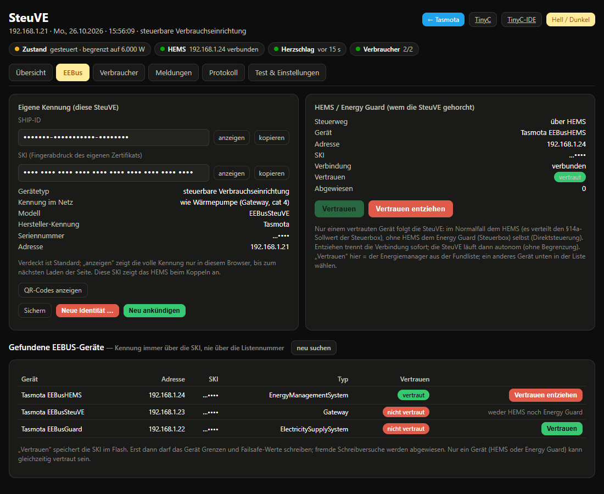
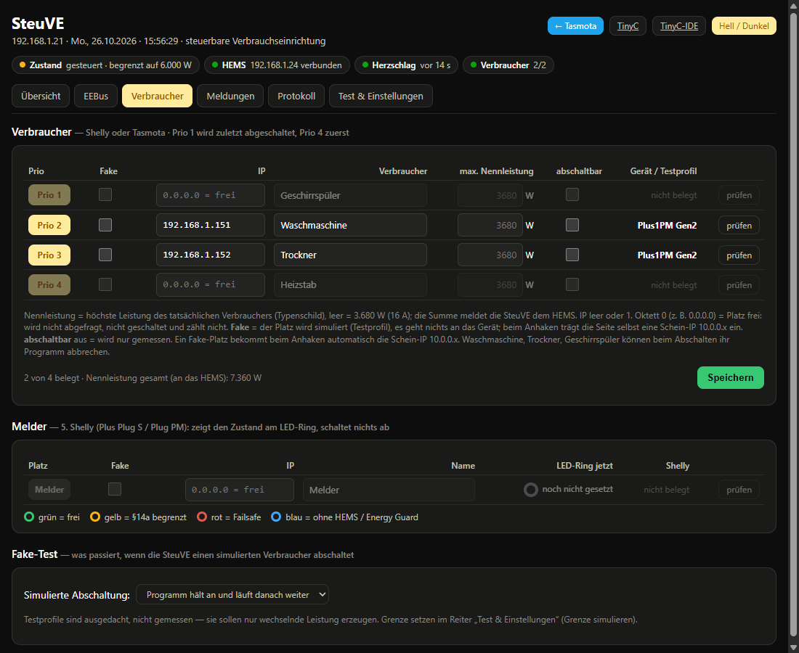
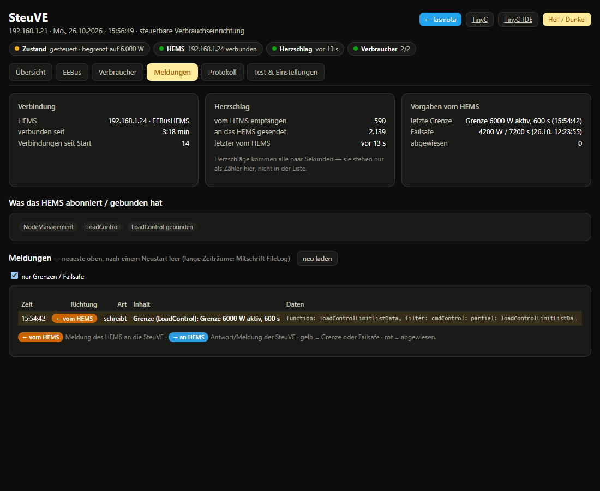
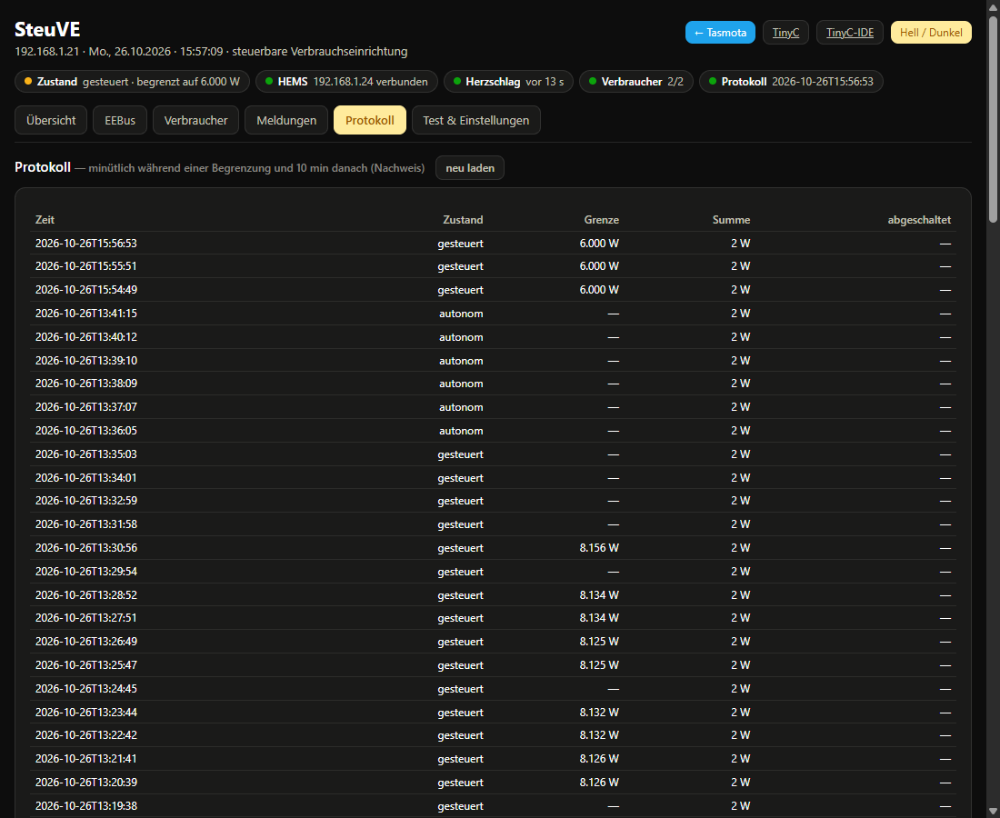
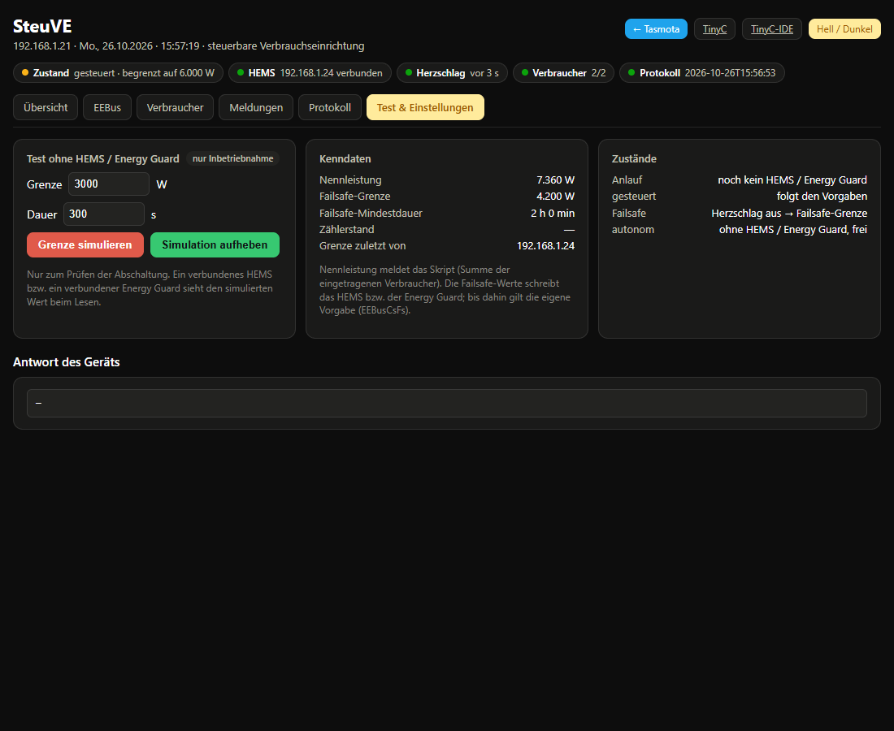

xdrv_128 v025 + TinyC-Skript steuve v010 · Persönliche Daten in den Bildern unkenntlich gemacht„SteuVE“ steht für steuerbare Verbrauchseinrichtung. Sie stellt sich per EEBUS wie eine Wärmepumpe oder Wallbox vor und nimmt eine § 14a-Bezugsgrenze (LPC) entgegen. Dahinter hängen bis zu vier Shelly- oder Tasmota-Geräte (Steckdosen, Schalter, Messgeräte), die sie nach Priorität abschaltet, wenn die Summe ihrer Leistung über der Grenze liegt.
xdrv_128 – spricht EEBUS mit dem Energy Guard (HEMS oder Steuerbox), empfängt Grenze und Failsafe-Werte, meldet Leistung und Nennleistung.steuve – fragt die Verbraucher (Shelly oder Tasmota) ab, meldet die Summe an den Treiber und schaltet nach Priorität.Kette: Netzbetreiber → Steuerbox → HEMS (teilt auf) → SteuVE → Verbraucher. Ohne HEMS kann die Steuerbox die SteuVE auch direkt steuern (Direktsteuerung). Nach BK6-22-300 Anlage 1 Ziff. 4.4 gilt für jede SteuVE entweder das eine oder das andere: Sie vertraut entweder dem HEMS oder der Steuerbox, nie beiden.
Auf der Tasmota-Hauptseite auf „SteuVE“ klicken. Darüber zeigt das Skript einen Kurzstand: Zustand, Summe und die Leistung je Verbraucher.

Oben rechts auf der SteuVE-Seite:
Die Statuszeile darunter zeigt immer: Zustand, Energy Guard (verbunden/getrennt), Herzschlag (wann zuletzt) und Verbraucher (erreichbar/belegt), bei laufender Mitschrift zusätzlich Protokoll.
Eine SteuVE wird auf einem von zwei Wegen gesteuert (BK6-22-300 Anlage 1 Ziff. 4.4): über ein HEMS (Ziff. 4.4 b – die Steuerbox gibt dem HEMS einen Gesamtwert, das HEMS teilt ihn auf) oder direkt von der Steuerbox (Ziff. 4.4 a). Die Übersicht zeigt, welcher Weg gerade gilt.



„nur messen“ an einer Karte heißt: dieser Verbraucher wird gemessen und mitgemeldet, aber nie geschaltet (Haken „abschaltbar“ aus oder reines Messgerät).

EEBusCsTyp.Nur ein Energy Guard kann vertraut sein. Nur er darf Grenzen und Failsafe-Werte schreiben; fremde Schreibversuche werden abgewiesen (Zähler „Abgewiesen“). Vertrauen entziehen trennt sofort; die SteuVE läuft dann autonom ohne Begrenzung. Ein neues Vertrauen wirkt ebenfalls sofort: Die SteuVE sucht den Energy Guard und verbindet sich mit ihm, ein Neustart ist nicht nötig.

| Spalte | Bedeutung |
|---|---|
| Prio 1 … 4 | Abschaltreihenfolge: Prio 4 wird zuerst abgeschaltet, Prio 1 zuletzt |
| Fake | Platz wird simuliert (Testprofil), es geht nichts ins Netz. Die Seite trägt dann selbst eine Schein-Adresse ein. |
| IP | Adresse des Shelly- oder Tasmota-Geräts. Leer oder erstes Oktett 0 = Platz frei (wird nicht abgefragt, nicht geschaltet, zählt nicht) |
| Verbraucher | Name, erscheint in Übersicht, Kurzstand und Protokoll |
| max. Nennleistung | höchste Leistung des tatsächlichen Verbrauchers (Typenschild). Leer = 3.680 W (16 A). Die Summe meldet die SteuVE dem HEMS als Nennleistung. |
| abschaltbar | an = darf geschaltet werden aus = wird nur gemessen und mitgemeldet |
| Gerät / Testprofil | erkanntes Gerät: Shelly-Modell und Generation oder „Tasmota 1 Relais“, „Tasmota Messung“ usw. prüfen fragt das Gerät in der nächsten Runde neu ab. |
Nach dem Ändern Speichern klicken – es erscheint „✓ gespeichert“. Etwa eine Sekunde später meldet die SteuVE die neue Nennleistung an das HEMS.
| Art | Beispiele | Funktion |
|---|---|---|
| Gen2+ mit Schalter | Plus 1PM, Plus Plug S, Pro 1PM, Gen3/Gen4-Schalter | messen und schalten |
| Gen1 Relais mit Messung | Shelly 1PM, Plug S (Gen1) | messen und schalten |
| Gen2+ PM1 | PM Mini Gen3 | nur messen |
| Gen2+ EM1 | Pro EM, EM Gen3 | nur messen |
| Gen2+ EM (3 Phasen) | Pro 3EM | nur messen (Summe aller Phasen) |
| Gen1 EM / 3EM | Shelly EM, Shelly 3EM | nur messen (Summe aller Kanäle) |
Reine Messgeräte werden nie geschaltet; beim Erkennen nimmt das Skript den Haken „abschaltbar“ selbst heraus. Meldet ein als Schalter geführtes Gerät keinen Schaltausgang, fragt das Skript es neu ab.
Antwortet ein Gerät nicht wie ein Shelly, fragt das Skript es als Tasmota-Gerät ab (Befehl Status, danach Status 10 für die Energiemessung). So lassen sich z. B. umgeflashte Steckdosen und Steckdosenleisten mit Messung verwenden.
| Anzeige | Gerät | Funktion |
|---|---|---|
| Tasmota 1 Relais (bzw. 2, 3 … Relais) | Steckdose oder Leiste mit Energiemessung | messen und schalten |
| Tasmota Messung | Messgerät ohne Relais | nur messen |
| Tasmota ohne Messung | Gerät ohne Energiemessung | nicht nutzbar (liefert keine Leistung) |
| Tasmota: Passwort? | Gerät mit Web-Passwort | nicht nutzbar, siehe Voraussetzungen |
/cm?cmnd=…) eingeschaltet sein, und es darf kein Web-Passwort gesetzt sein.Power0), weil eine Leiste meist nur einen Messkreis für alle Steckplätze hat.ENERGY → Power aus Status 10, alle 10 s wie bei den Shellys.

Das Protokoll ist der Nachweis einer Begrenzung. Es wird nur während einer Begrenzung und 10 Minuten danach minütlich geschrieben (Datei /steuve_log.csv, bei SD-Karte dort). Ohne Begrenzung kommt nichts dazu – die letzten Zeilen können deshalb Tage alt sein.

EEBusCsFs), und von wem die letzte Grenze kam..pvs-Datei, deren Name dem Skriptdateinamen folgt. Lädt man eine neue Fassung desselben Skripts (gleicher @name) unter neuem Dateinamen, übernimmt TinyC die alte Liste selbst (im Log: „persist values taken over“) – auch beim Laden über die TinyC-IDE.STVCFG. Mit STVSET lässt sie sich schnell wieder eintragen.slot<N>-<name> und haben keinen Update-Knopf. Der Update-Knopf erscheint nur bei Skripten aus dem Verzeichnis, wenn dort eine neuere @version liegt.Tasmota-Hauptseite → Werkzeuge → Konsole.
xdrv_128)| Befehl | Bedeutung |
|---|---|
EEBusCs | Zustand als JSON: Zustand, Begrenzt, Grenze, Restzeit, Energy Guard, Failsafe, Nennleistung, Leistung, Herzschlag |
EEBusCsTrustEEBusCsTrust <ski>EEBusCsTrust hmEEBusCsTrust 0 | aktuellen Stand anzeigen diesem Energy Guard vertrauen (SKI oder eindeutiger Anfang) dem Energiemanager aus der Fundliste vertrauen Vertrauen entziehen (trennt sofort) |
EEBusCsTyp wpEEBusCsTyp wallboxEEBusCsTyp steuerbox | stellt sich als Wärmepumpen-Gateway vor (Vorgabe; im Netz „Gateway“, Kategorie 4) stellt sich als Ladestation vor (im Netz „ChargingStation“, Kategorie 3) alte Kennung (bis Treiber v006) Umstellen kündigt neu an und trennt eine eingehende Verbindung. |
EEBusCsFs <W> [s] | eigene Failsafe-Vorgabe, gilt bis der Energy Guard eigene Werte schreibt |
EEBusCsSim <W> [s]EEBusCsSim 0 | Grenze lokal simulieren (nur zum Testen) Simulation aufheben |
EEBusCsMsg | Meldungen vom/an den Energy Guard (letzte 60, ohne Herzschläge) |
EEBusCsPower <W> [Wh]EEBusCsMax <W> | Leistung bzw. Nennleistung melden macht das Skript selbst, nicht von Hand nötig |
EEBusScanEEBusPeers | EEBUS-Geräte im Netz suchen gefundene Geräte anzeigen |
steuve)| Befehl | Bedeutung |
|---|---|
STVSTAT | Kurzstand |
STVLIST | Messwerte je Platz: Leistung, an/aus, von SteuVE abgeschaltet, Fehler; dazu Melder und Modus |
STVCFG | eingetragene Liste je Platz: Name, Adresse, Nennleistung, Fake, abschaltbar, Profil, Typ, Modell |
STVSET p,fake,abs,ip,nenn,profil,name | Platz p (1 … 5) setzen und speichern (das macht der Knopf „Speichern“) |
STVPROBE p | Gerät auf Platz p neu erkennen (Shelly-Modell/Generation bzw. Tasmota) |
STVMODE 0STVMODE 1STVMODE 2 | Fake: Programm hält an und läuft weiter Fake: Programm startet von vorn Fake: Gerät bleibt aus |
STVSIM <W> [s]STVSIM 0 | Grenze simulieren (ruft EEBusCsSim)Simulation aufheben |
Adresse prüfen (Tippfehler im dritten Oktett), Gerät in der Shelly-App bzw. im Browser aufrufen. Bei Geräten im WLAN kann eine Antwort auch einmal ausbleiben; nach der nächsten Runde (10 s) ist der Platz meist wieder da. Sonst „prüfen“ klicken.
Das Gerät antwortet, aber nicht verwertbar. Im Browser http://<Adresse>/cm?cmnd=Status aufrufen: Kommt eine Warnung, ist ein Web-Passwort gesetzt; kommt nichts, ist die HTTP-Schnittstelle ausgeschaltet. Danach „prüfen“ klicken.
Das Skript wurde mit einem anderen @name geladen (dann gibt es nichts zu übernehmen) und hat eine neue, leere .pvs angelegt (Abschnitt 10). Ebenso kann es direkt nach einem Neustart passieren, wenn die SD-Karte beim Start noch nicht bereit war und das Skript die Kopie im Flash gelesen hat.
Ein HEMS verteilt die Vorgabe der Steuerbox auf seine Geräte. Wie es aufteilt, legt das HEMS fest; die SteuVE bekommt nur ihren Anteil (Anzeige „Anteil SteuVE“ in der Übersicht).
Abgeschaltet wird nur, was „abschaltbar“ ist und gerade zieht, und nur, solange die Summe über der Grenze liegt. Reine Messgeräte (PM Mini, EM, 3EM, Tasmota ohne Relais) werden nie geschaltet.
Vertraut wird nur der SKI, die beim „Vertrauen“ gewählt wurde – geprüft am Zertifikat der Gegenstelle. Schreibt ein anderes Gerät (z. B. die Steuerbox, während die SteuVE dem HEMS vertraut), wird es abgewiesen (Zähler „Abgewiesen“). Das ist gewollt: Eine SteuVE gehorcht nur einem Energy Guard. Hat der Energy Guard eine neue Identität erzeugt, muss ihm neu vertraut werden.
So verlangt es der Use Case LPC: Nach einem Neustart beginnt die SteuVE mit dem Failsafe-Wert, bis der Energy Guard eine Vorgabe schickt. Das geschieht meist nach wenigen Sekunden; kommt 120 s lang nichts, wechselt sie auf „autonom“ und ist frei.
Das passiert nur mit einer neuen Identität (neue SKI). Zieht die SteuVE auf ein anderes Board um, Zertifikat und Schlüssel aus dem Flash mitnehmen – dann erkennt das HEMS das vorhandene Gerät wieder, auch mit anderer Adresse.